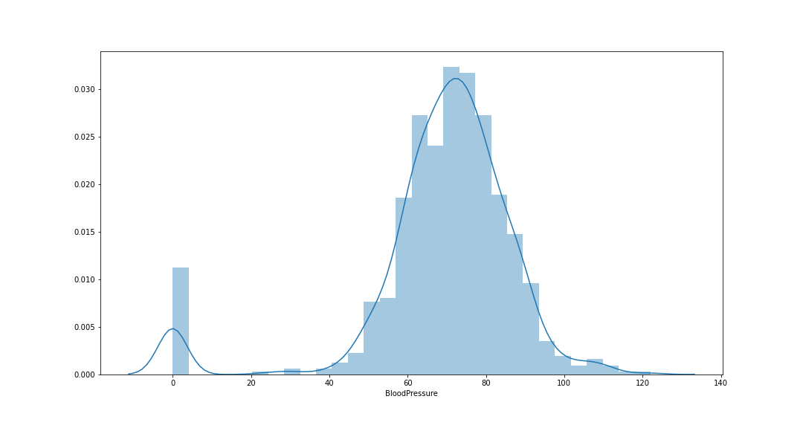
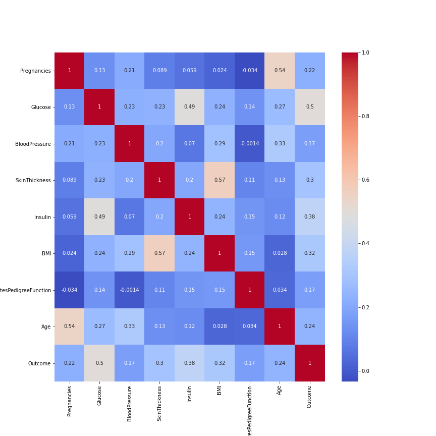
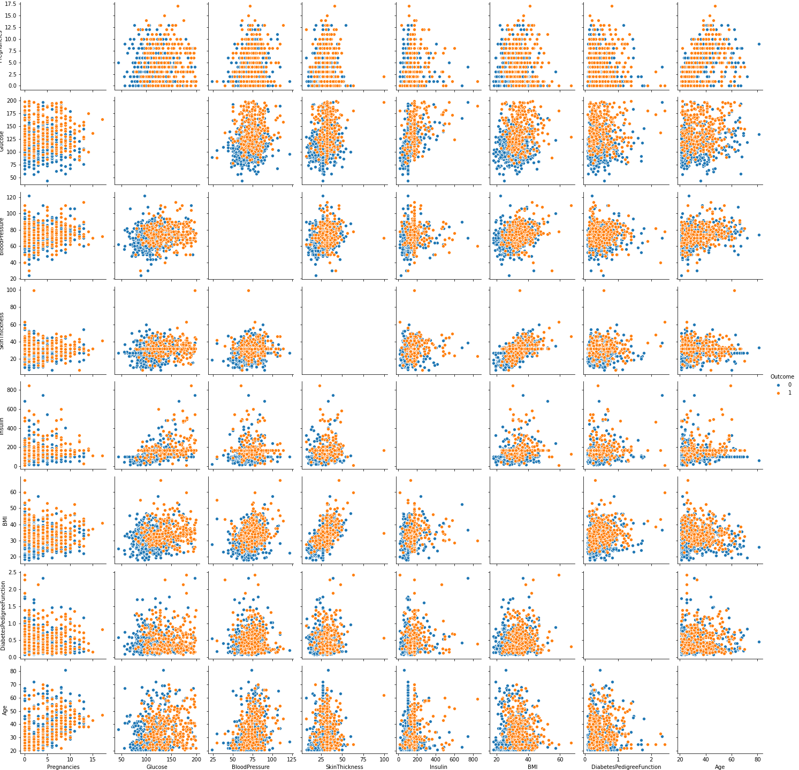

September, 2020
Recently while suffering on kaggle and wanting to do some comprative study using various models to do some classification, I came across this problem. I would love to show you my findings on this problem. I used Neural network, SVM and Navie Bayes classifier.
Data analysis and preprocessing
First and foremost we should look whether the data has any null data or not. If we run the basic code we will get the following table.
import pandas as pd
import numpy as np
import pandas as pd
import matplotlib.pyplot as plt
%matplotlib inline
import plotly.offline as py
import plotly.express as px
import plotly.graph_objs as go
from plotly.offline import download_plotlyjs,init_notebook_mode,plot, iplot
import plotly.tools as tls
import plotly.figure_factory as ff
py.init_notebook_mode(connected=True)
from mlxtend.preprocessing import minmax_scaling
data = pd.read_csv('diabetes.csv')
data.info()
| # | Column | Non-Null Count | Dtype |
|---|---|---|---|
| 0 | Pregnancies | 768 non-null | int64 |
| 1 | Glucose | 768 non-null | int64 |
| 2 | BloodPressure | 768 non-null | int64 |
| 3 | SkinThickness | 768 non-null | int64 |
| 4 | Insulin | 768 non-null | int64 |
| 5 | BMI | 768 non-null | float64 |
| 6 | DiabetesPedigreeFunction | 768 non-null | float64 |
| 7 | Age | 768 non-null | int64 |
| 8 | Outcome | 768 non-null | int64 |
Sometimes the data will use -1, 0, -999, 1 etc as null values. Best way to find it out is to plot histogram of all the
columns. If we see a non-distributed peak at a variable, and if logically the peak at that value does not hold any meaning
we can assume that value is our null value.
I have shown histogram plot of blood pressure below.
import seaborn as sns
plt.figure(figsize=(15,8))
sns.distplot(data.BloodPressure, bins =30)

From the above image it is clear that 0 is our null value as it has a quite a peak, but also because logically
a person cannot have zero blood pressure. Let's replace all 0's to NaN value and plot to see number of missing data
per feature.
data[
['Glucose','BloodPressure','SkinThickness','Insulin','BMI','DiabetesPedigreeFunction','Age']
] = data[
['Glucose','BloodPressure','SkinThickness','Insulin','BMI','DiabetesPedigreeFunction','Age']
].replace(0,np.NaN)
def missing_plot(dataset, key) :
null_values = pd.DataFrame(dataset.isnull().sum(), columns = ['Count'])
trace = go.Bar(
x = null_values.index, y = null_values['Count'] ,opacity = 0.8,
text = null_values['Count'], textposition = 'auto',
marker=dict(color = '#7EC0EE', line=dict(color='#000000',width=1.5)
))
layout = dict(title = "Missing Values")
fig = dict(data = [trace], layout=layout)
py.iplot(fig)
missing_plot(data, 'Outcome')
Usually there are two ways to overcome this problem:
- Dropping observations that have missing values.
- Replaying missing value, using the other observations.
def find_median(var):
temp = data[data[var].notnull()]
temp = data[[var,'Outcome']].groupby('Outcome')[[var]].median().reset_index()
return temp
for i, col in enumerate(data.columns):
if(col == 'Outcome'):
continue
medians = find_median(col).to_numpy()
data.loc[(data['Outcome'] == 0) & (data[col].isnull()) , col] = medians[0][1] # Median of Non-diabetics
data.loc[(data['Outcome'] == 1) & (data[col].isnull()) , col] = medians[1][1] # Median of diabetics
display(data.isnull().sum())
This will replace all the null-values with the median of the data.
Correlation
It might be helpful to know the correlation between variables. Here, I will show the heatmap and the scatterplot distribution taken pairwise.
# Correlation and heatmap
cor=data.corr()
plt.figure(figsize=(12,12))
sns.heatmap(cor,annot=True,cmap='coolwarm')
plt.savefig('heatmap.png')
plt.show()

Heatmap
# Pairwise scatterplot
sns.pairplot(data=data,hue='Outcome',diag_kind='scatter')
plt.savefig('pairwise-scatter.png')
plt.show()

Pairwise scatterplot
Standard scaling
Standardize features by removing the mean and scaling to unit variance. The standard score of a sample x is calculated as: $$ z = \frac{(x - \mu)}{s} $$ where \(\mu\) is the mean of the triaining sample and s is the standard deviation of the training sample.This is important as SVM will assume by default that the data is centered and have variance in the same order.
from sklearn.model_selection import train_test_split
from sklearn.preprocessing import StandardScaler
X = data[['Pregnancies','Glucose','BloodPressure','SkinThickness','Insulin','BMI','DiabetesPedigreeFunction','Age']]
Y = data.Outcome
X_train,X_test,y_train,y_test=train_test_split(X,Y,test_size=0.2)
stdScalar = StandardScaler()
stdScalar.fit(X_train)
X_train = stdScalar.transform(X_train)
X_test = stdScalar.transform(X_test)
Neural network classifier model
def build_model():
model = tf.keras.Sequential([
tf.keras.layers.Dense(8, activation='relu', input_shape=[len(X_train[0])]),
tf.keras.layers.Dense(4, activation='relu'),
tf.keras.layers.Dense(1,activation='sigmoid')
])
optimizer = tf.keras.optimizers.Adam(0.001)
model.compile(loss='binary_crossentropy', optimizer=optimizer, metrics=['accuracy'])
return model
history = model.fit(X_train, y_train,epochs=1000, verbose=2)
pred = model.predict(X_test)
pred[pred <= 0.5] = 0
pred[pred > 0.5] = 1
print(classification_report(y_test, pred))
| preicison | recall | f1-score | support | |
|---|---|---|---|---|
| 0 | 0.88 | 0.90 | 0.89 | 99 |
| 1 | 0.81 | 0.78 | 0.80 | 55 |
| accuracy | 0.86 | 154 | ||
| macro average | 0.85 | 0.84 | 0.84 | 154 |
| weighted avg | 0.86 | 0.86 | 0.86 | 154 |
Naive Bayes classifier
from sklearn.naive_bayes import GaussianNB
classifier = GaussianNB()
classifier.fit(X_train,y_train)
pred = classifier.predict(X_test)
print(classification_report(y_test, pred))
| preicison | recall | f1-score | support | |
|---|---|---|---|---|
| 0 | 0.78 | 0.82 | 0.80 | 99 |
| 1 | 0.64 | 0.58 | 0.61 | 55 |
| accuracy | 0.73 | 154 | ||
| macro average | 0.71 | 0.70 | 0.70 | 154 |
| weighted avg | 0.73 | 0.73 | 0.73 | 154 |
Support vector machine(SVM)
from sklearn import svm
for i in range(1, 100):
svm_classifier = svm.SVC(C=i, kernel="rbf")
svm_classifier.fit(X_train,y_train)
pred = svm_classifier.predict(X_test)
if(accuracy_score(y_test, pred) > 0.85):
print(f"C= {i}")
print(classification_report(y_test, pred))
We can see having C = 3 or 4 or 5 gives us best result.
| preicison | recall | f1-score | support | |
|---|---|---|---|---|
| 0 | 0.86 | 0.92 | 0.89 | 99 |
| 1 | 0.83 | 0.73 | 0.78 | 55 |
| accuracy | 0.85 | 154 | ||
| macro average | 0.85 | 0.82 | 0.83 | 154 |
| weighted avg | 0.85 | 0.85 | 0.85 | 154 |
Conclusion
We can conclude that Neural networks gives us the best results in terms of Recall and F1-score.
| Model | preicison | recall | f1-score |
|---|---|---|---|
| Neural Network | 0.85 | 0.84 | 0.84 |
| Naive Bayes | 0.71 | 0.70 | 0.73 |
| SVM | 0.85 | 0.82 | 0.83 |
NOTE: In health it is very important to maximise the recall rather than precision.
Links
Dataset link: https://www.kaggle.com/uciml/pima-indians-diabetes-database/tasks?taskId=1163My Kaggle notebook link: https://www.kaggle.compima-indians-diabetes-comparative-study